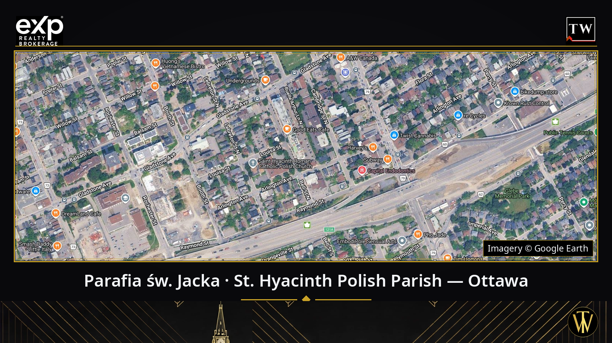
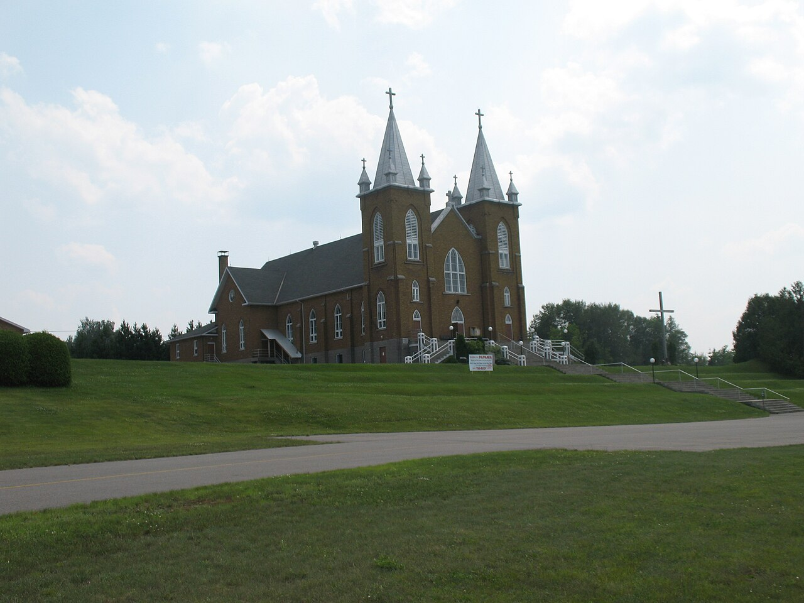
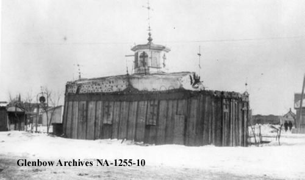
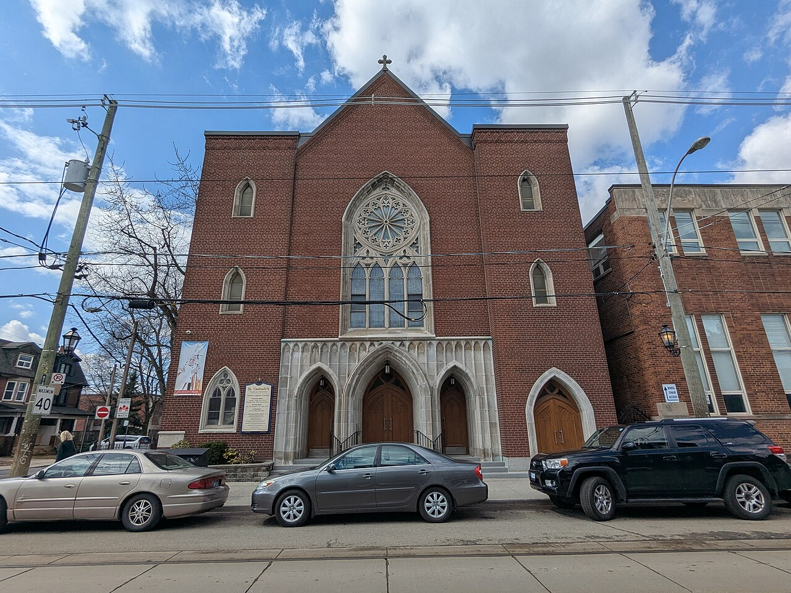
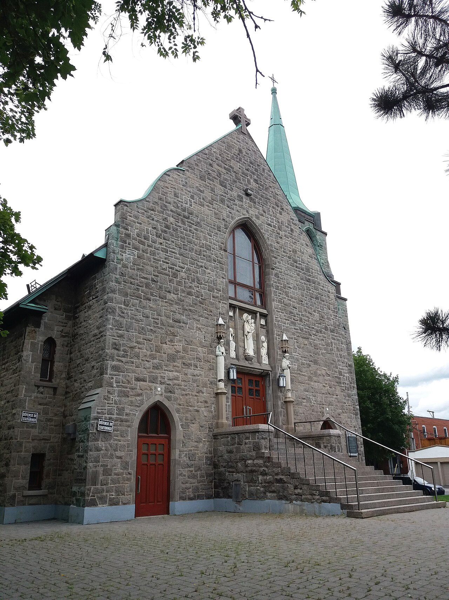
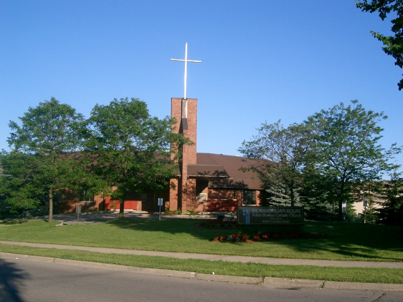

Zdjęcie satelitarne: © Google Earth
Parafia Świętego Jacka w Ottawie — historia polskiego kościoła przy LeBreton Street
Przy rogu LeBreton Street North i Louisa Street, na zachodnim skraju LeBreton Flats, stoi kościół, który ottawska Polonia zbudowała własnymi rękami — dosłownie. Parafia św. Jacka Odrowąża to nie tylko najstarszy polski adres duchowy w stolicy Kanady. To także pierwsza wielka „transakcja nieruchomości" tutejszej Polonii: w październiku 1954 roku polscy imigranci kupili od miasta Ottawa ziemię pod kościół za symboliczną kwotę — i trzy lata później modlili się już we własnej świątyni. Pisze Tomasz R. Witek, Polski agent w Ottawie (Exp613), który na co dzień pomaga polskim rodzinom kupować i sprzedawać domy w Ottawie — a ta historia jest także częścią jego własnej opowieści o tym mieście.
Zanim stanął kościół: żołnierze, uchodźcy i pierwsza polska Msza
Pierwsza Msza święta w języku polskim w Ottawie odprawiona została w listopadzie 1942 roku. Prawdziwy początek parafii przyniósł jednak koniec wojny. W latach 1944–1949 do Ottawy przybyła duża grupa polskich żołnierzy z Wielkiej Brytanii i Włoch, a wraz z nimi byli więźniowie obozów koncentracyjnych i uchodźcy. Od pierwszych dni ci ludzie chcieli jednego: polskiego kościoła i polskiego księdza. Od 1948 roku regularną opiekę duszpasterską nad Polakami sprawowali Misjonarze Oblaci Maryi Niepokalanej (OMI). W grudniu 1951 roku przyjechał do Ottawy o. Jan Sajewicz OMI — późniejszy pierwszy proboszcz — a polskie Msze odprawiano w kaplicy św. Jana Chrzciciela przy 96 Empress Avenue. 25 stycznia 1952 roku zawiązał się pierwszy Komitet Parafialny.
Październik 1954: Polonia kupuje ziemię od miasta
Każda społeczność imigrancka ma moment, w którym przestaje być „w gościnie", a zaczyna być u siebie. Dla ottawskiej Polonii tym momentem był październik 1954 roku. Polscy imigranci zakupili od miasta Ottawa grunt u zbiegu ulic LeBreton i Louisa — za kwotę symboliczną — i powołali Komitet Budowy Kościoła. 7 października 1956 roku poświęcono plac budowy. 28 stycznia 1957 roku arcybiskup Marie-Joseph Lemieux oficjalnie ogłosił powstanie parafii św. Jacka, a już w lipcu 1957 roku budowa była ukończona. 4 sierpnia 1957 roku o. Sajewicz odprawił w nowym kościele pierwszą Mszę. Żołnierze i uchodźcy, którzy dwanaście lat wcześniej przyjechali do Kanady z jedną walizką, mieli własny kościół — zbudowany niecałe trzy lata od zakupu ziemi.
Goście, którzy znaczą więcej niż wizyty
Historia parafii czyta się jak skrót historii powojennej Polski. 16 października 1961 roku parafię odwiedził generał Władysław Anders. 2 września 1969 roku przybył kardynał Karol Wojtyła i przywiózł w darze relikwie św. Jacka Odrowąża z katedry wawelskiej — te same relikwie, które przyszły papież rozwoził wówczas po polskich parafiach całej Kanady. We wrześniu 1984 roku, podczas pielgrzymki Jana Pawła II do Ottawy, parafianie spotkali się z papieżem. 7 października 1986 roku gościł tu kardynał Józef Glemp, a 13 września 1994 roku — prezydent Lech Wałęsa z małżonką. Kościół zdobi m.in. witraż św. Jacka nad głównym ołtarzem (1962), a wnętrze odnawiano w latach 1992–1994; w 2007 roku poświęcono nowe organy, a parafia świętowała 50-lecie. Dziesięciolecie później, w październiku 2017 roku, obchodzono 60. rocznicę powstania parafii.
1962: dzielnica znika, kościół zostaje
Najtrudniejszy rozdział tej historii nie dotyczy samej parafii, lecz tego, co stało się z jej sąsiedztwem. 18 kwietnia 1962 roku National Capital Commission złożyła zawiadomienia o wywłaszczeniu LeBreton Flats. Około 2800 mieszkańców i setki przedsiębiorstw musiało opuścić dzielnicę; 53 akry przejęto przymusowo od 240 właścicieli za około 17 milionów dolarów. Ostatni budynek — Duke House — zburzono w październiku 1965 roku. Cała dzielnica na wschód od kościoła przestała istnieć. Sam kościół, stojący na zachodnim skraju Flats przy ulicy Louisa, przetrwał — i stoi do dziś, pięć lat starszy od wywłaszczenia, które zmiotło jego okolicę. Parafia broniła swojego miejsca także później: w 1989 roku zakupiła dom przy 27 Louisa Street z myślą o parkingu, a spór o jego zagospodarowanie toczył się jeszcze w 2011 roku.

Parafia św. Jacka dziś
Parafia przy 201 LeBreton Street North do dziś prowadzona jest przez Misjonarzy Oblatów i pozostaje polską parafią personalną stolicy. Działają przy niej m.in. Ruch Światło-Życie, Koło Różańca Żywego, Rycerze Niepokalanej oraz Duchowa Adopcja Dziecka Poczętego, a w sali parafialnej wykłady prowadzi Instytut Naukowy im. Oskara Haleckiego. Parafia od lat prowadzi własny projekt budowlany znany parafianom jako Projekt 2010, dokumentowany w biuletynach parafialnych. Jak żywa była wspólnota jeszcze w 2010 roku, pokazują słowa ówczesnego przewodniczącego rady parafialnej Rogera Furmanczyka dla Centretown News: „Jesteśmy jedyną polskojęzyczną parafią w regionie Ottawa-Gatineau i jest nas tu ponad 20 000. W niedziele mamy zwykle 250 osób na Mszy" (wypowiedź z 2010 roku — przytaczamy ją jako świadectwo epoki, nie aktualną statystykę).
Polonia w liczbach
Kanada (spis 2021): 982 820 osób deklaruje polskie pochodzenie etniczne (2,7% ludności kraju). Język polski jako język ojczysty podaje w Kanadzie 176 010 osób (spis 2021).
Ontario (spis 2021): 461 090 osób polskiego pochodzenia — najwięcej spośród prowincji.
Ottawa–Gatineau, obszar metropolitalny (CMA), spis 2021: 37 120 odpowiedzi „polskie pochodzenie etniczne" (2,53%).
Miasto Ottawa, spis 2021: 30 300 odpowiedzi „polskie pochodzenie etniczne" (profil spisowy Statistics Canada).
Miasto Ottawa, spis 2006: 25 685 odpowiedzi (3,2%).
Jak czytać te liczby: to odpowiedzi o pochodzeniu, a nie o języku używanym w domu; dozwolone były odpowiedzi wielokrotne, a pytanie spisowe zmieniło się między spisami — dlatego liczb z różnych lat i obszarów nie wolno ze sobą łączyć ani przedstawiać jako prostej miary wzrostu. Polonia ottawska nigdy nie zmieści się w jednej liczbie — ale każda z nich mówi prawdę o swoim miejscu i roku.
Od Wilna po Winnipeg: polskie parafie w całej Kanadzie
Święty Jacek nie jest wyjątkiem — jest częścią najstarszej polskiej opowieści w Kanadzie. Ta opowieść zaczyna się w 1858 roku, gdy kaszubscy osadnicy założyli Wilno w hrabstwie Renfrew — pierwszą polską osadę w Kanadzie. Parafia w Wilnie powstała w 1875 roku, a dzisiejszy kościół Matki Bożej Częstochowskiej, Królowej Polski, stoi od 1936 roku. W sąsiednim Barry's Bay kościół św. Jadwigi konsekrowano w 1915 roku — parafia przy placu im. Karola Wojtyły działa do dziś, a jej biuletyn podał w grudniu 2025 roku niedzielną frekwencję 462 osoby.

Kościół św. Marii (Matki Bożej Częstochowskiej, Królowej Polski) w Wilnie, Ontario. Fot. Hans-Jürgen Hübner, CC BY 3.0, Wikimedia Commons.
Dalej na zachód historia pisana jest wielkimi parafiami miejskimi. Parafia Ducha Świętego w Winnipeg (1898) otworzyła w 1902 roku pierwszą polską szkołę w Kanadzie i wydawała od 1908 roku „Gazetę Katolicką" — pierwszy polski tygodnik katolicki w kraju. Toronto zyskało parafię św. Stanisława Kostki w 1911 roku, a w 1948 roku z niej wyrosła parafia św. Kazimierza przy Roncesvalles — serce torontońskiej Polonii. W Montrealu księgi parafii Matki Bożej Częstochowskiej sięgają 1909 roku, a obecny kościół zbudowano w latach 1946–1947. Najmłodszy rozdział dopisują przedmieścia: parafia św. Maksymiliana Kolbe w Mississaudze powstała w 1979 roku, a kościół św. Eugeniusza w Brampton konsekrowano dopiero w 2011 roku. Prawie wszędzie ten sam wątek łączy mapę: parafie prowadzą lub prowadzili Misjonarze Oblaci — ten sam zakon, który opiekuje się św. Jackiem w Ottawie.

Polski kościół w Winnipeg, rok 1905. Fot. nieznany, domena publiczna, Wikimedia Commons.

Kościół św. Kazimierza przy Roncesvalles w Toronto. Fot. Qviri, CC BY-SA 4.0, Wikimedia Commons.

Kościół Matki Bożej Częstochowskiej w Montrealu. Fot. Fczarnowski, CC BY-SA 4.0, Wikimedia Commons.

Kościół św. Maksymiliana Kolbe w Mississaudze. Fot. Jonasz (Wikipedia polska), CC BY-SA 1.0, Wikimedia Commons.
[MIEJSCE NA ZDJĘCIE KOŚCIOŁA ŚW. JACKA W OTTAWIE — zdjęcie własne Tomasza lub fotografia parafii udostępniona za jej pisemną zgodą. W wolnych repozytoriach (Wikimedia Commons) nie istnieje żadne zdjęcie ottawskiego kościoła na wolnej licencji — zweryfikowano w październiku 2026 roku.]
Co ta historia ma wspólnego z domami? Wszystko.
Zauważmy wzór: wszędzie tam, gdzie Polacy osiedlali się w Kanadzie, najpierw kupowali ziemię i budowali kościół — a domy i dzielnice wyrastały wokół niego. Ottawska Polonia z 1954 roku nie myślała o tym jak o inwestycji, ale dokładnie to zrobiła: zamieniła wynajmowane miejsce kultu we własny, trwały adres wspólnoty. Dzisiejsza Polonia mieszka już w całej Ottawie — od centrum po Barrhaven, Kanata i Orléans — i wszędzie tam, jako polski agent nieruchomości Ottawa, pomagam polskim rodzinom przejść tę samą drogę, którą przeszli parafianie św. Jacka: od „jesteśmy w gościnie" do „to jest nasz dom". Jeśli przeglądasz Ottawa houses for sale albo przygotowujesz się do sprzedaży domu, w którym Twoja rodzina spędziła pół życia — porozmawiajmy po polsku, bez pośpiechu i bez zobowiązań.
Podziel się wspomnieniem
Jeśli Twoja rodzina modliła się u św. Jacka, brała ślub w tym kościele albo mieszkała na LeBreton Flats przed wywłaszczeniem — chętnie poznamy Wasze fotografie i wspomnienia. Zasady publikacji ustalamy zawsze z góry i za zgodą właścicieli materiałów.
Czytaj dalej
Więcej o polskim życiu i nieruchomościach w stolicy znajdziesz na stronie Polski Agent Nieruchomości w Ottawie | Tomasz R. Witek — centrum polskiej serii tego bloga. Ten artykuł przeczytasz także po angielsku: St Hyacinth Polish Parish Ottawa — History of the Polish Church on LeBreton Street.
Tomasz R. Witek — Polski agent w Ottawie, Exp613. Pomagam po polsku, angielsku, hiszpańsku i włosku.
Tomasz R. Witek
Real Estate Agent
eXp Realty, Brokerage
613-314-1199